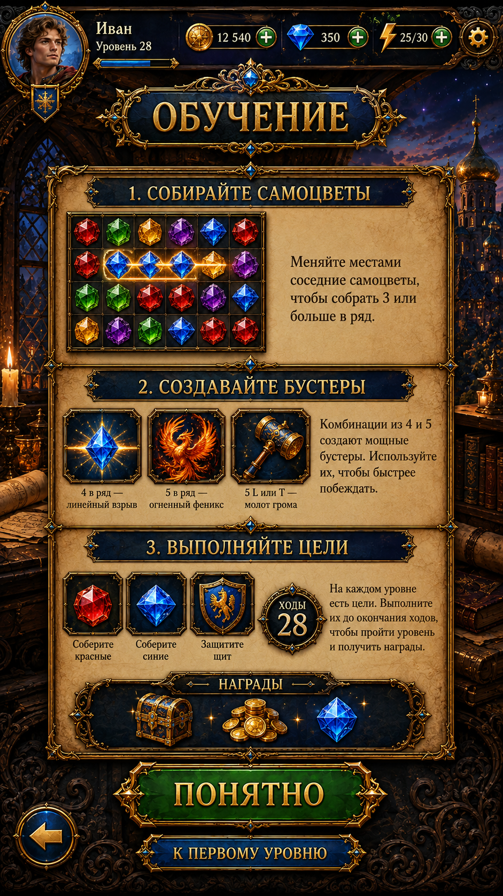

Design review before implementation. The new original has been found and verified. No new AI-generated design is needed. The existing Unity page has not been changed in this review.

Original reference, unchanged. Its sample balances, instructions and rewards are illustrative; the corrections below apply to implementation.
The navy title plaque, antique-gold borders, parchment lessons and emerald primary action fit the approved game style. Adopt this three-section overview in place of the old tabbed opening screen. Use the real shared Home header, with coins, gems and energy, and the approved game gems, specials and reward art.
| Area | Reviewed implementation direction |
|---|---|
| Header and title | Reuse ProductionPlayerHeader; show real saved values. Preserve the reference’s “ОБУЧЕНИЕ” plaque and its upper ornament without clipping. |
| 1. Collect gems | Native 6×4 teaching grid with approved gems and source rails. Explain adjacent swaps and matches of three or more. This diagram is read-only and must not spend moves or inventory. |
| 2. Create specials | Keep the three illustrated cards, but show actual match-created specials: four in a line → line clear; five → color clear; T/L → area clear. Do not teach that matching creates inventory Firebirds or hammers. |
| 3. Complete goals | Keep the goal cards and moves medallion. Replace “protect the shield” with a supported obstacle goal such as clearing crates. “28” is a labelled example, not a universal level limit. |
| Rewards | Reuse the approved Home gift/chest, coin and gem art. Label these as reward examples; opening Help grants nothing and promises no fixed amounts. |
| Bottom actions | “ПОНЯТНО” and Back return to the origin. “К ПЕРВОМУ УРОВНЮ” opens Level 1 through the existing pre-level/energy flow, without resetting progress. While a round is paused, return to that round instead of silently replacing it. |
| Phone layout | Anchor header/footer to safe edges. Keep parchment content in its own scroll area when it cannot fit; preserve border thickness, ornament visibility and readable text. |
The reference’s full image will remain review-only. Production requires a clean scenery plate, separated frame/button sprites, live localized text and real controls. Source panel extraction through the established Scenario workflow follows this design review; existing approved gems and boosters will be reused.
Detailed review and implementation scope · Original provenance · Review checks